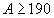
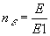
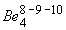
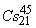
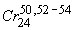
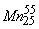

|
В. И. ЕЛИСЕЕВ ВВЕДЕНИЕ В МЕТОДЫ ТЕОРИИ
ФУНКЦИЙ ПРОСТРАНСТВЕННОГО КОМПЛЕКСНОГО ПЕРЕМЕННОГО |
|
6.2. Возбужденное состояние ядер с позиции структуры пространства на малых линейных расстояниях. Расчет электронного и позитронного распада ядер. Условия электронного и позитронного распада ядер с позиции пространственной структуры.
Ядра- это квантовые системы и почти все они имеют возбужденные состояния. Квантовый характер этих систем определяется структурой пространства ядерного взаимодействия и вычетом из него пространств еще большего числа измерений, интерпретируемого как
Квадрупольные моменты ядер оказались значительно больше, чем предсказывала теория. Большие квадрупольные моменты ядер теория объясняет деформацией остова заполненных оболочек. Причем одновременно допускается коллективное колебание систем частиц, удерживаемых силами притяжения нуклонов. Как показали исследования квадрупольные моменты нельзя объяснить одним или двумя нуклонами сверх заполненных оболочек.
Эксперимент наглядно показывает, что квадрупольный момент проявляется вблизи ядер с А
, а также в области (Лантаноиды) и  (Актиноиды). Это в точности соответствует циклонной модели ядра. Лантаноиды это область начала формирования второго блокаЭнергия возбуждения открытых резонансов достаточно велика. Приведем экспериментальные данные открытых резонансов, так как на эти экспериментальные данные ориентировались в дальнейших расчетах.
Изовекторный гигантский дипольный резонанс имеет энергию возбуждения
Гигантский квадрупольный резонанс имеет энергию возбуждения
для ядер с . Возбуждения даны в МэВ. Исследование гигантского квадрупольного резонанса проведено при помощи реакции неупругого рассеяния
. Возбуждения даны в МэВ. Исследование гигантского квадрупольного резонанса проведено при помощи реакции неупругого рассеяния  - частиц с энергией 96МэВ на ядрах .
- частиц с энергией 96МэВ на ядрах .
Изовекторный гигантский резонанс (протоны и нейтроны движутся в противофазе) имеет энергию возбуждения
МэВ.
В ядрах с  наблюдается изоскалярный низкоэнергетический октупольный резонанс с энергией возбуждения
наблюдается изоскалярный низкоэнергетический октупольный резонанс с энергией возбуждения
МэВ. , а в области высоких энергий возможно иметь
МэВ.
Свойства ядер, которые легли в основу разработки той или иной модели, обобщаются в циклонной модели ядра введением в пространстве ядерных остова из энергетических  -туннелей. Взаимодействие нуклонов осуществляется через эти изолированные туннели. Отклонение интегрального обменного от своего оптимального значения характеризует возбужденное или стабильное состояние ядра.
-туннелей. Взаимодействие нуклонов осуществляется через эти изолированные туннели. Отклонение интегрального обменного от своего оптимального значения характеризует возбужденное или стабильное состояние ядра.
Циклонная модель ядра кардинально изменяет теорию радиоактивного распада ядер;  -распада,
-распада,
 -распада, деления ядер.
-распада, деления ядер.
Численный расчет структуры ядерной материи.
Формул Вайцзеккера позволяет вычислить энергию связи атомных ядер с погрешностью, не превышающей 10-20МэВ. А комбинация капельной модели с оболочечной повышает точность формулы до 1-2МэВ, что позволяет оценить значения каждое из которых является разностью больших чисел типа . В связи с этим формула Вайцзеккера подтверждена экспериментально и может быть использована для оценки выдвинутой гипотезы о структурировании ядерной материи в соответствии со структурой пространства на расстояниях . В таблице приложения представлены результаты расчета следующих величин:
1. Е- энергия связи атомных ядер по формуле Вайцзеккера,
2. Е1-энергия связи одного  -туннеля,
-туннеля,
3.  коэффициент, характеризующий количество циклонных вихрей в пространстве ядерной материи,
4. - интегральная величина обменного кванта, где - масса ядра.
5. - масса обменного кванта на один нуклон,
6.  - энергия связи на один нуклон.
- энергия связи на один нуклон.
Все энергетические величины рассчитаны в МэВ. Из таблицы выделяем устойчивые ядра согласно таблице изотопов. Проводим оценку параметров .
|
Изотоп |
|
|
|
|
0,9 |
7,09 |
115,2 |
|
|
0,44-0,6 |
3,89-5,48 |
85,58-101,84 |
|
|
 |
0,66-0,75 |
6,29-7,03 |
108,53-114,71 |
|
0,63-0,72 |
6,06-6,82 |
106,5-113,0 |
|
|
0, 77-0, 79 |
7,20-7,48 |
116,08-118,31 |
|
|
0,76-0,83 |
7,00-7,49 |
116,81-114,42 |
|
|
|
0,89-0,95 |
7,71-7,92 |
120,05-120,96 |
|
0,97 |
7,88 |
121,39 |
|
|
1,02-1,09 |
8,02-8,2 |
122,45-123,84 |
Сформировался первый циклонный вихрь с
на ядре элемента неона , которое имеет дважды магическое число 10. Элемент неон есть нейтральный газ, закрывает второй ряд и второй период периодической таблицы элементов. Стабильные элементы этого ряда имеют максимальное значение исследуемых параметров. Эти параметры растут с ростом заряда ядра. В пределах конкретного заряда ядра Z изменение числа нейтронов от величины нейтронов в стабильном ядре приводит к снижению всех трех параметровОтклонение числа нейтронов от величины в стабильном ядре приводит к электронным распадам и захватам. Изменение параметров
при этих распадах выявило новую характеристику последних.Распады сопровождаются увеличением массы обменного кванта на нуклон и увеличением коэффициента
Установленные закономерности устойчивы на протяжении всей таблицы изотопов периодической системы. Устойчивые ядра имеют максимальные значения параметров
Рассматриваем третий ряд третьего периода таблицы изотопов.
|
|
|||
|
0,91 |
7,19 |
115,99 |
|
|
1,17 |
5,82 |
104,36 |
Ядро элемента натрия
стабильно и имеет максимальные значения параметров|
1,16-1,26 |
8,23-8,39 |
124,01-125,22 |
|
|
1,28 |
8,3 |
124,59 |
|
|
1,32-1,43 |
8,35-8,51 |
124,95-126,14 |
|
|
1,45 |
8,42 |
125,45 |
|
|
1,49-1,6 |
8,43-8,59 |
125,56-126,75 |
|
|
1,62-1,72 |
8,5-8,59 |
126,03-126,7 |
|
|
1,66-1,87 |
8,49-8,68 |
125,97-127,38 |
Электронные оболочки элемента аргона полностью сформированы. Однако ядерный
туннель сформировывается на следующих двух ядрах изотопов калия и кальция.|
1,8-1,91 |
8,55-8,65 |
126,4-127,14 |
Изотоп
|
2,00 |
8,65 |
127,14 |
Далее
|
1,84-2,00-2,14 |
8,52-8,73 |
127,37-127,74 |
Дважды магическое ядро попадает в ряд стабильных с максимальным значением параметров
, а параметр показывает, что сформирован второй циклонный туннель. Структурный пространственный анализ по формуле при давал . То есть ядро с зарядом претендовало на устойчивое ядро с закрытым вторымЗакономерности по изменению параметров
при этом

Процессы
Далее рассматриваем четвертый ряд четвертого периода.

2, 34 8, 75 127, 87
магическое число нуклонов 50
входит в интервал максимального значения параметров , так же как и в следующих ядрах ванадия и хрома.|
2,38 |
8,74 |
127,79 |
|
|
 |
2,37—2,56 |
8,71-8,73 |
127,56-128,08 |
|
 |
2,57 |
8,75 |
127,9 |
|
2,62-2,72 |
8,77-8,79 |
127,92-128,16 |
|
|
2,76 |
8,75- |
127,92 |
|
|
2,68-3,00 |
8,67-8,78 |
127,32-128,10 |
Изотоп никеля закрывает четвертый ряд четвертого периода периодической
Таблицы имея
и магическое число 28. Магическое число нуклонов 50 входит в наиболее устойчивые ядра изотопов, однако не может рассматриваться как число закрывающее оболочку по нуклонам. Оболочечная модель не достаточно корректно выбрала ориентировку на магические числа. Введение в рассмотрение количествоВыявленные условия
распадов работают и в этом ряду элементов. НапримерУсловия соблюдаются вплоть до второго знака чисел.
Условия выполняются.
Мини оглавление:
[0], [1.1.1, 1.1.2, 1.1.3, 1.1.4, 1.1.5, 1.1.6, 1.1.7, 1.1.8, 1.2, 1.2.1, 1.2.2, 1.2.2.a, 1.2.2.b, 1.2.2.c, 1.2.2.d, 1.2.2.e, 1.2.2.f, 1.2.2.g, 1.2.2.h, 1.2.3, 1.3.1, 1.3.2, 1.3.3, 1.3.4, 1.3.5, 1.3.6, 1.4.1, 1.4.2, 1.5, 1.6, 1.7.1, 1.7.2, 1.7.3.1, 1.7.3.2, 1.7.3.3, 1.7.4.1, 1.7.4.2, 1.8.1], [2.1, 2.2],[3.1, 3.2, 3.3, 3.4.1, 3.4.2, 3.4.3, 3.4.4, 3.4.5],[4.1, 4.2, 4.3, 4.4],[5.1, 5.1.Рис.52, 5.2, 5.3, 5.4, 5.4.Т1, 5.4.Т2, 5.4.Т3, 5.5.1, 5.5.2, 5.5.3, 5.5.4],[6.1.1, 6.1.2, 6.2.1, 6.2.2, 6.2.3, 6.2.4, 6.2.5, 6.3, 6.4.1, 6.4.2, 6.5.1, 6.5.2],[7.1, 7.2, 7.3, 7.4, 7.5, 7.6, 7.7.1, 7.7.2, 7.8.1, 7.8.2, 7.8.3, 7.9],[8.1, 8.2.1, 8.2.2, 8.3, 8.4, 8.5, 8.6, 8.6.T1, 8.7, 8.8.1, 8.8.2, 8.8.3, 8.9.1, 8.9.2, 8.9.3, 8.10, 8.10.T2, 8.10.T3],[9.1, 9.2, 9.3, Рис.88, 89, 90, 91, 92, 93, 94, 95, 96, 97, 98, 99, 100],[10.1, 10.2, 10.3, 10.4, 10.5, 10.6, 10.7, 10.8, 10.9, 10.10, 10.11, 10.12, 10.13, 10.14, 10.15.1, 10.15.2, 10.16.1, 10.16.2, 10.17, 10.18],[11]
Размещенный материал является электронной версией книги: © В.И.Елисеев, "Введение в методы теории функций пространственного комплексного переменного", изданной Центром научно-технического творчества молодежи Алгоритм. - М.:, НИАТ. - 1990. Шифр Д7-90/83308. в каталоге Государственной публичной научно-технической библиотеки. Сайт действует с 10 августа 1998.
E-mail: mathsru@gmail.com